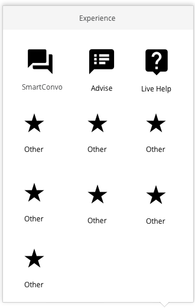

<!-- this is the entry point for selected card -->
<link rel="import" href="../../bower_components/polymer/polymer.html">
<link rel="import" href="../../bower_components/iron-icons/iron-icons.html">
<link rel="import" href="../../bower_components/paper-icon-button/paper-icon-button.html">
<link rel="import" href="../../styles/custom-styles.html">
<link rel="import" href="../../styles/share-styles.html">
<link rel="import" href="../core/cache.html">
<dom-module id="convospot-widget-experience">
    <style include="custom-styles"></style>
    <style include="share-styles"></style>
    <style>
        .container {
            position: fixed;
            bottom: 60px;
            padding: 3px;
            line-height: 0.5rem;
            font-weight: bolder;
            color: rgba(0,0,0,0.87);
            right: 45px;
            /*border-radius: 5px;
            -webkit-box-shadow: 0 2px 10px rgba(0,0,0,.2);
            box-shadow: 0 2px 10px rgba(0,0,0,.2);
            border: 1px solid #ccc;
            border-color: rgba(0,0,0,.2);
            color: #000;*/
        }
    </style>
    <template>
        <template is="dom-if" if="{{open}}">
            <div class="container">
                </img>
            </div>

        </template>
    </template>
</dom-module>
<script>
(function() {
    'use strict';
    Polymer({
        is: 'convospot-widget-experience',
        behaviors: [
            Spinel.Base,
            Spinel.Cache
        ],
        listeners: {},
        properties: {
                open: {
                    type: Boolean,
                    value: false,
                    notify: true
                },
        },
        _demo: function() {
            PubSub.publish('demo1', {});
        }
    });
})();
</script>
